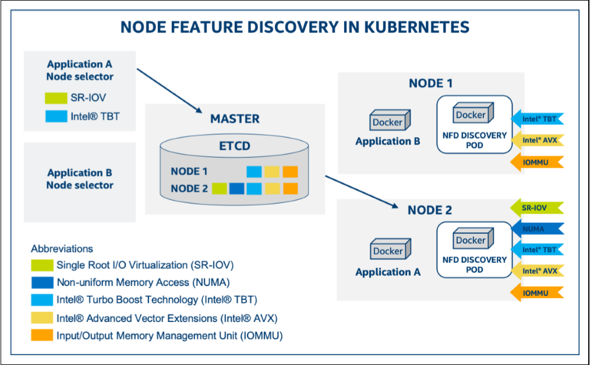

Enabling Node Feature Discovery in a Kubernetes* Cluster¶
Node Feature Discovery is designed to detect additional hardware features on each node in a Kubernetes cluster. It can discover more info on CPU, IOMMU, Kernel, Memory, Network, PCI, Storage, and the general system. each node is labeled with the additional node features so that Pods can be scheduled or not scheduled based on those additional node features, it is designed to run as a separate container on each individual node of the cluster, discovers capabilities of the node, and finally, publishes these as node labels using the Kubernetes API, then be stored into ETCD which runs on the Kubernetes Master node.By using a Node Selector, an incoming pod can express its requirements for specific capabilities.
Examples:
Application A requests to land on a node with SR-IOV and Turbo Boost capabilities. The Kubernetes scheduler on the master node will use the stored node labels to match the incoming pod to the most appropriate node.
Application B has no special capability request,therefore, it can be placed on either node.

NFD uses labels for advertising node-level features¶
Labels are key-value pairs that are attached to Kubernetes objects, such as pods or nodes for specifying attributes of objects that may be relevant to the end user. They can also be used to organize objects into specific subsets. Labels are a part of the metadata information that is attached to each node’s description. all this information is stored in ETCD.
Node labels are published by NFD with encoded the following information:¶
Namespace, i.e. feature.node.kubernetes.io
The source for each label (e.g. cpu).
The name of the discovered feature as it appears in the underlying source (e.g. cpuid.AESNI from cpu).
The value of the discovered feature.
Feature label names adhere to the following pattern: <namespace\>/<source name\>-<feature name\>[.<attribute name\>]
The last component (i.e. attribute-name) is optional, and only used if a feature has a logical sub-hierarchy,
e.g.
sriov.capableandsriov.configurefrom the network source.
An example of a label created by node feature discovery:
feature.node.kubernetes.io/nfd-network-sriov.capable = true
The following values indicate presence of SR-IOV capable network interface card.
namespace:
feature.node.kubernetes.iosource:
networkfeature name:
sriov.capablevalue:
true
In addition to the actual node feature labels, NFD also advertises its own
software version: feature.node.kubernetes.io/node-feature-discovery.version = v0.3.0.
For more details of the supported feature sources and their feature labels, please see the Kubernetes sigs repository.
*Other names and brands may be claimed as the property of others.